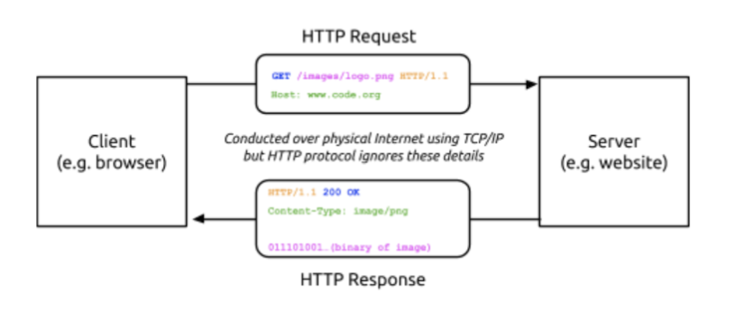
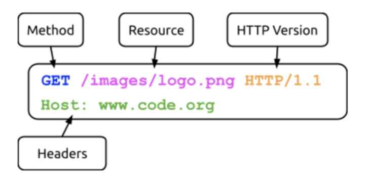
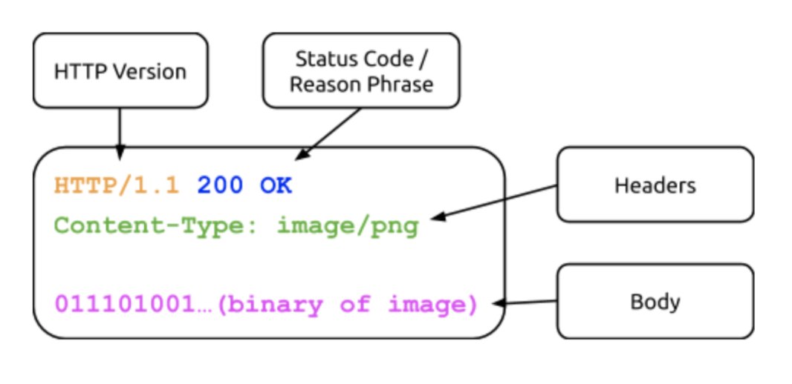

Lesson 9 - HTTP
At the end of this lesson, you will be able to:
- Explain how the HyperText Transfer Protocol works to transmit website information.
HyperText Transfer Protocol (HTTP)
Let's learn about the last piece of the puzzle here, a protocol called HTTP. Have you ever seen the letters “HTTP” anywhere while using the internet?
🔒 https://www.pcc.edu
HyperText Transfer Protocol Secure
HTTP means HyperText Transfer Protocol. HTTP is the underlying protocol used by the World Wide Web and this protocol defines how messages are formatted and transmitted, and what actions Web servers and browsers should take in response to various commands.
For example, when you enter a URL in your browser, this actually sends an HTTP command to the Web server directing it to fetch and transmit the requested Web page. The other main standard that controls how the World Wide Web works is HTML (HyperText Markup Language), which covers how Web pages are formatted and displayed.
As you watch the video below, take notes on:
- What problem is HTTP solving?
- What is a GET request and what are you requesting?
- How does HTTP rely on the other layers of the Internet?
- Why are SSL, TLS, and HTTPS necessary?
- What do certificate authorities do and why are they necessary?
When you visit a website you're actually getting sent a file by a server. HTTP is solving the problem of how to ask for that file. All of your communications are being sent over the Internet so these requests are being sent inside TCP/IP packets and over the physical wires of the Internet. HTTP by itself sends information unencrypted, so anyone in a position to watch the traffic could read it—that's the problem HTTPS, the secure version, solves. These days virtually all web traffic is HTTPS, and plain unencrypted HTTP is the rare exception. Certificate authorities ensure that when you start a secure connection you're talking to the website you think you're talking to.
HTTP request
The original versions of HTTP (HTTP/1.0 and HTTP/1.1) are ASCII text-based protocols. It's somewhat remarkable to note that many "high level" protocols have historically been just computers sending ASCII text messages back and forth. (The newer HTTP/2 and HTTP/3 are binary protocols for the sake of speed, but they carry the same kind of request-and-response conversation under the hood.) Each protocol simply defines the rules of the "conversation" between two machines. In the case of HTTP, it is the protocol used for sending and receiving web pages and other web content. Let’s look under the hood and see HTTP in action.
As we have learned, HTTP is a high level protocol that defines how users of the Internet (clients) request and receive data like web pages, images, video, audio, and files from the servers containing them.
A client will send a request to the server with an identifier for a desired piece of data, and the server will attempt to respond to the request, typically by returning the information requested (figure 2.16).

When you type a URL in your browser, your computer (the client) needs to “ask” the server that is storing the data and images for the web page to return its contents, so your browser can display it. To do so, your computer sends a message called an HTTP request—and in HTTP/1.1, the classic version of the protocol (the one we'll read here, because it's human-readable), that request is a plain ASCII-text message. Figure 2.17 shows what a simple HTTP request for the data of an image might look like:

When a server receives an HTTP request it will respond with a message of its own. Once again, in HTTP/1.1 the response is sent entirely as ASCII text and must be correctly formatted. Figure 2.18 shows a sample HTTP Response:

HTTP is the protocol for transmitting website information to you. The systems that are in place to allow you to connect to any website you want to get to are the autonomous standard protocols the Internet is built on. To find the website that you are trying to access, the DNS converts the URL you type in such as www.pcc.edu and turns it into an IP address. Using this IP address, your computer knows exactly where to go to connect to, communicate with, and ultimately show you the website you are accessing.